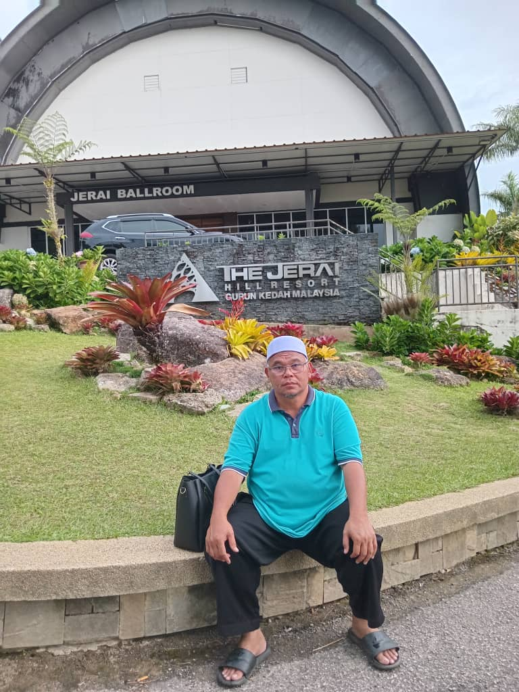
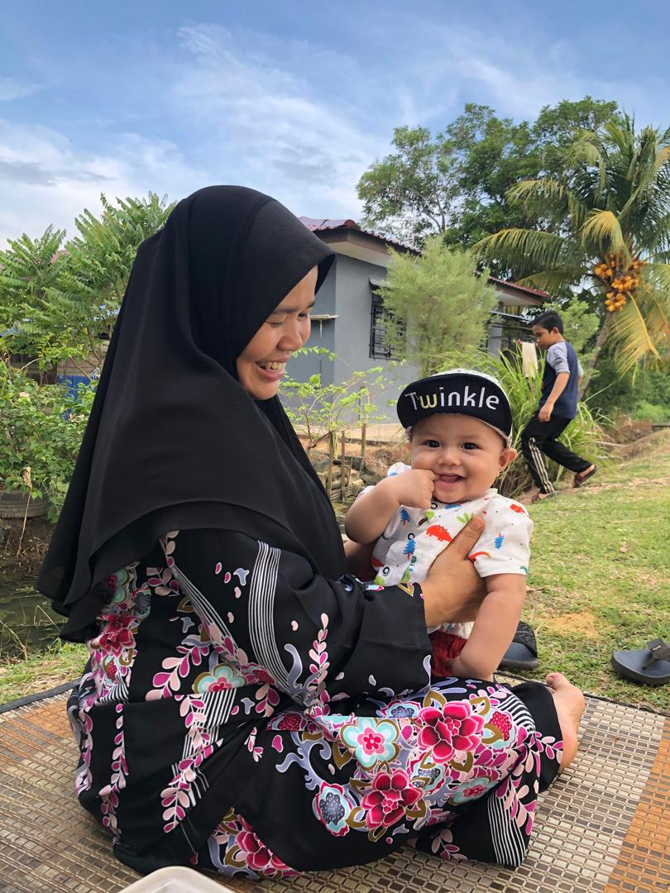
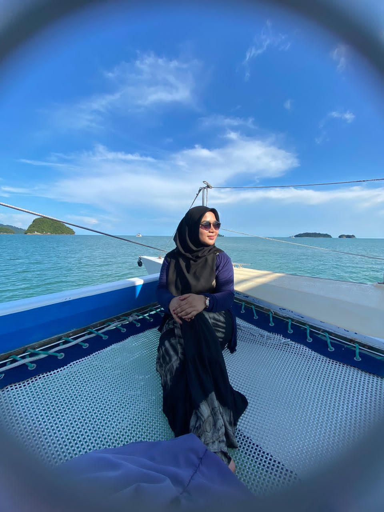
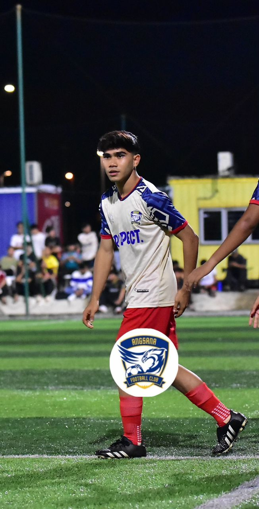
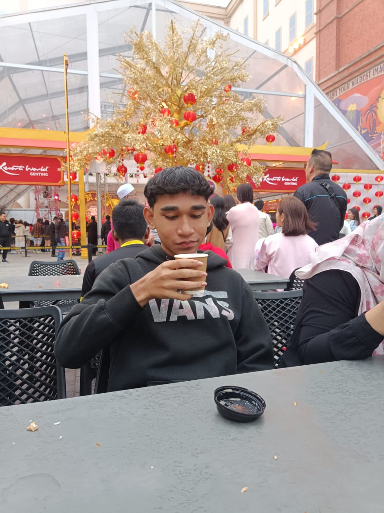
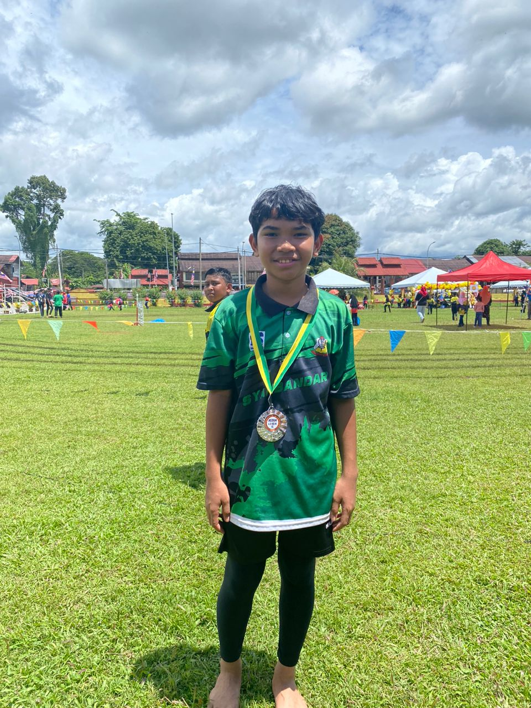

My Family
I come from a loving family that has always supported me in my endeavors. Here are some details about my family members:
Father
Name: Mohd Zaini Bin Ishak
Occupation: Clerk
About: My father works as a clerk and is dedicated to his job. He has always emphasized the importance of hard work and responsibility in our lives.
Mother
Name: Khalijah Binti Abas
Occupation: Housewife
About: My mother is a wonderful housewife who manages our home with love and care. She has taught me the values of kindness and patience.
Siblings
Sister: Noraina Syakhirah Binti Mohd Zaini
Occuption: Executive officer
About: My sister is an executive officer who plays a crucial role in her organization. She is known for her leadership skills and dedication to her work, always striving to achieve excellence in her projects.
Eldest Brother: Muhammad Ammar Syahmi Bin Mohd Zaini
Occupation: University Student
About: My younger brother is a University student who loves sports and is very active in his University.
Middle Brother: Abdul Azim Sufi Bin Mohd Zaini
Occupation: High School Student
About: My middle brother is currently a high school student who enjoys studying science and is very active in sports. He loves playing football and is part of the school team.
Youngest Brother: Akram Syafiq Bin Mohd zaini
Occupation: High School Student
About: My youngest brother is a high school student with a keen interest in badminton. He practices regularly and aspires to join the school badminton team, showcasing his dedication and passion for the sport.
